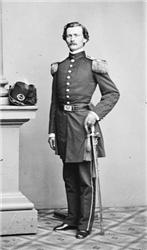
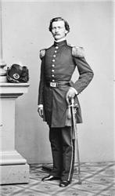

Poe was unable to support himself, so he enlisted in the United States Army as a private on May 27, 1827, using the name "Edgar A. Perry". He claimed that he was 22 years old even though he was 18.[22] He first served at Fort Independence in Boston Harbor for five dollars a month.[20] That year, he released his first book, a 40-page collection of poetry titled Tamerlane and Other Poems, attributed with the byline "by a Bostonian". Only 50 copies were printed, and the book received virtually no attention.[23] Poe's regiment was posted to Fort Moultrie in Charleston, South Carolina, and traveled by ship on the brig Waltham on November 8, 1827. Poe was promoted to "artificer", an enlisted tradesman who prepared shells for artillery, and had his monthly pay doubled.[24] He served for two years and attained the rank of Sergeant Major for Artillery (the highest rank that a non-commissioned officer could achieve); he then sought to end his five-year enlistment early. He revealed his real name and his circumstances to his commanding officer, Lieutenant Howard, who would allow Poe to be discharged only if he reconciled with Allan. Poe wrote a letter to Allan, who was unsympathetic and spent several months ignoring Poe's pleas; Allan may not have written to Poe even to make him aware of his foster mother's illness. Frances Allan died on February 28, 1829, and Poe visited the day after her burial. Perhaps softened by his wife's death, Allan agreed to support Poe's attempt to be discharged in order to receive an appointment to the United States Military Academy at West Point, New York.[25] Poe was finally discharged on April 15, 1829, after securing a replacement to finish his enlisted term for him.[26] Before entering West Point, he moved to Baltimore for a time to stay with his widowed aunt Maria Clemm, her daughter Virginia Eliza Clemm (Poe's first cousin), his brother Henry, and his invalid grandmother Elizabeth Cairnes Poe.[27] In September of that year, Poe received "the very first words of encouragement I ever remember to have heard"[28] in a review of his poetry by influential critic John Neal, prompting Poe to dedicate one of the poems to Neal[29] in his second book Al Aaraaf, Tamerlane and Minor Poems, published in Baltimore in 1829.[30] Poe traveled to West Point and matriculated as a cadet on July 1, 1830.[31] In October 1830, Allan married his second wife Louisa Patterson.[32] The marriage and bitter quarrels with Poe over the children born to Allan out of extramarital affairs led to the foster father finally disowning Poe.[33] Poe decided to leave West Point by purposely getting court-martialed. On February 8, 1831, he was tried for gross neglect of duty and disobedience of orders for refusing to attend formations, classes, or church. He tactically pleaded not guilty to induce dismissal, knowing that he would be found guilty.[34] Poe left for New York in February 1831 and released a third volume of poems, simply titled Poems. The book was financed with help from his fellow cadets at West Point, many of whom donated 75 cents to the cause, raising a total of $170. They may have been expecting verses similar to the satirical ones Poe had written about commanding officers.[35] It was printed by Elam Bliss of New York, labeled as "Second Edition", and including a page saying, "To the U.S. Corps of Cadets this volume is respectfully dedicated". The book once again reprinted the long poems "Tamerlane" and "Al Aaraaf" but also six previously unpublished poems, including early versions of "To Helen", "Israfel", and "The City in the Sea".[36] Poe returned to Baltimore to his aunt, brother, and cousin in March 1831. His elder brother Henry had been in ill health, in part due to problems with alcoholism, and he died on August 1, 1831.